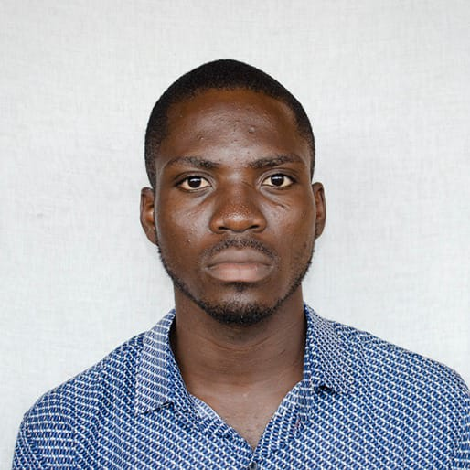

Patrick Kofi Canathy
Box TS 619 Teshie Accra-Ghana, Phone +233556700674
patrickcanathy@gmail.com
Education
Ghana Communication Technology University
Programme: Bachelor of Science, Information Technology
Academic Standing: Second Upper
Projects
- Group Project (Smart Agriculture Monitoring System) Sept. 2023
- Website for Medico Medical Supplies
- Website for Tema General Hospital
Work Experience
Freelance Web Developer, City Square Tech. 2022-Present
- Design, build and maintain custom websites tailored to client requirements.
- Perform texting, troubleshoot issues and ensure cross-device functionality
IT Support, Tema General Hospital. Sept 2023- Dec-2024
- Provided comprehensive IT support to a diverse range of clients, resolving hardware, software, and network issues promptly and effectively
- Diagnosed and troubleshooted technical problems ensuring minimal downtime and optimal productivity
IT Support Intern, L’aine Services. Dec. 2022 – Apr. 2023
- Provided technical support to employees, resolving hardware and software issues efficiently and ensuring smooth IT operations.
- Conducted system updates, upgrades, and equipment deployments to maintain optimal performance and functionality.
Leadership Experience
Youth Leader, New Apostolic Church Ghana - Suncity Congregation 2020-Present
- Develop and lead engaging faith-based activities, Bible studies, retreats, and events
- Organize group events and outreach programs to foster community engagement and build strong relationships.
Certifications And Training
- AI Career Essentials - ALX
- Web Technology - GI-KACE
- Web Development- CODTECH IT SOLUTIONS
Skills And Interest
- Computer Skills
- Proficient in Microsoft Office
- HTML
- CSS
- JS
- React
- Troubleshooting both Hardware and Software
- Languages
- English
- Twi
- Ewe
- Beginner - German
- Playing violin